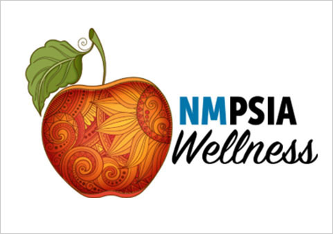
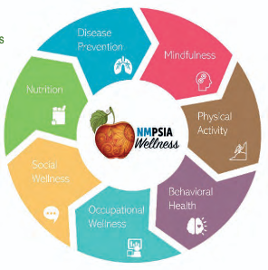

2026 Employee Benefits Program Guide
New Mexico Public Schools Insurance Authority
NMPSIA Carriers and Consultants
2026 Letter from NMPSIA
New Mexico Public Schools Insurance Authority
2026 Letter from NMPSIA
Greetings from NMPSIA,
The New Mexico Public Schools Insurance Authority (NMPSIA) was created by the New Mexico Legislature in 1986 to serve as a purchasing agency for public school districts, post-secondary educational entities, charter schools and other educational entities at large. Through NMPSIA, member schools are able to offer comprehensive medical, pharmacy, dental, vision, life and long-term disability benefits to approximately 41,800 employees and 79,300 total members.
NMPSIA offers both High Option and Low Option medical plans, administered by BlueCross BlueShield of New Mexico and Presbyterian Health Plan. These options are designed to give members meaningful choice when selecting coverage that best fits their needs. As of January 2026, NMPSIA introduced plan design changes to better align with this approach. While the Low Option plan has a lower monthly premium, it requires members to pay more out of pocket when they receive care. Out-of-network benefits are still available; however, the updated plan design encourages members to use in-network providers whenever possible to help manage costs.
We are proud to introduce the new Pharmacy Benefits Manager, Express Scripts by Evernorth. Members will continue to have access to High Option and Low Option prescription drug plans which correspond with their medical plan enrollment. High and Low Option dental plans are offered through BlueCare Dental, Delta Dental and United Concordia Dental. NMPSIA offers a Premier vision plan through Davis Vision, and Life and Disability plans through The Standard.
Since 2024, NMPSIA has partnered with Lantern to offer a unique benefit designed to eliminate member's cost-share for musculoskeletal-related surgery or pain management. Members will be automatically enrolled with Lantern when they elect any one of our medical plans.
Employees have access to a comprehensive wellness program as part of their benefits package, providing no-cost digital health management programs and personalized nutrition coaching with licensed healthcare professionals. Watch for monthly communications, which include helpful health resources such as: fitness, weight management, and mental health support, along with reminders to help you stay on track with your personal health goals. No matter what your health goal or condition, NMPSIA offers wellness and benefit programs designed to support your needs. For more details, visit nmpsia.com/wellness.
NMPSIA also encourages members to be informed and engaged in their benefit choices. Understanding your selected plans is the best way to get the most value from the benefits you pay for each month. To help ensure you receive important updates and guidance, please:
- Provide a personal email address (not a work email) through the MyBenefits Portal so you don't miss important communications.
- Schedule your free in-network preventive care, including annual physicals, routine screenings (such as colonoscopies and mammograms), immunizations, family planning services, well-child care, routine vision or hearing screenings through age 19, and preventive dental checkups. For non-routine tests or procedures, be sure to obtain prior authorization and understand your plan's deductible, copays, and coinsurance. Please note that virtual visits with your primary care or specialist provider are billed at the standard office or specialist visit copay. To receive virtual care at no cost to you, use your carrier's designated virtual visit platform to access the national network of providers for non-emergency medical and behavioral health needs.
- Partner with your healthcare providers to plan cost-effective care, treatments, and medications. Ask about prior authorizations for services and medications, share quarterly formulary updates before filling prescriptions, and discuss whether generic alternatives are available to help reduce out-of-pocket costs.
To assist you in deciding the benefits that meet your health and wellness needs, we strongly encourage you to carefully read all information in this guide and visit each carrier's website. Compare medical plans by viewing a side-by-side comparison chart, available on the home page of nmpsia.com.
Always visit your employer's benefits office FIRST for guidance on enrolling, disenrolling, or making timely changes to your coverages.
Thank you for participating in NMPSIA's benefits.
NMPSIA Benefits Team
Enrollment Guidelines
This guide gives you an overview to help you understand your eligibility requirements, enrollment guidelines, and qualifying events for enrolling in benefit coverages and wellness programs. The following pages include a summary of the benefits and wellness programs offered for medical, prescription, dental, vision, disability, and life options. Through its benefits and wellness programs, NMPSIA offers options to select health coverages with delivery systems to support your healthcare needs while managing your health, healthcare costs and stabilizing NMPSIA’s self-funded claims. Wellness programs are at no-cost to enrolled members.
Benefit Enrollment Guidelines
You are eligible for benefits if:
- Your employer has informed you that you are eligible for benefits.
- You work the minimum qualifying number of hours per week established by your employer.
NMPSIA Requirements
- You must work 15 hours or more per week to receive basic life insurance.
- You must work 20 hours or more per week to enroll in all other lines of coverage.
- Note: If you work fewer than 20 hours per week, but at least 15 hours per week, you may be eligible to participate if your employer has adopted an annual part-time employee resolution that has been approved by the NMPSIA Board of Directors.
- You are a one-bus owner operator, designated as a bus employee.
- You are an international employee on a work visa in the U.S.
- You are a variable hour or seasonal employee (or substitute), as determined by your employer, eligible for medical coverage only, as stated in the Affordable Care Act guidelines
You are not eligible for benefits if:
- You are an employee of an independent contractor or fleet bus driver.
Benefit Enrollment Begins Here!
Automatic Basic Life Enrollment
Your employer will:
- Enroll you in the basic life benefit amount offered to you. Basic life coverage is effective the first day of the month following your date of hire (date scheduled to report to work).
Guidelines on How to Apply for Your Benefit Options
Your employer will provide you with the benefit options available to you, or you can find this information by looking for your employer in the participating employers table of this guide.
You must provide a Social Security Number (SSN) or Individual Taxpayer Identification Number (ITIN).
- An international employee must also provide a copy of a passport and work visa.
31-Day Enrollment Period
- You have 31 days from your date of hire (date scheduled to report to work) to apply for all other benefits offered by your employer.
- You have 31 days from the date of a qualifying event to apply for other benefits offered by your employer. (See How to Report a Change of Status section on page 14 for details.)
To apply you must complete, digitally sign, and submit requested enrollment and upload required supportive documentation via the MyBenefits Portal.
REMEMBER: The effective date for all other lines of coverage
is determined by you and your employer, provided NMPSIA rules
of enrollment have been met and you have authorized payroll
deductions in writing.
Coverage can never go into effect
retroactively and will never be effective sooner than the
first day of the month following your first day you report to
work.
Once enrolled, you may switch medical and dental carriers and/or medical and dental plans during the annual switch enrollment period in the fall, and coverage will start January 1st of the next year. Coverage ends on the last day of the month that your employer deducts premium from your payroll check. This end date is determined by NMPSIA rules and set by your employer.
Active Eligible Board Member Enrollment Process:
You may qualify for benefits as a board member if you are actively serving as a (publicly elected) board member of a participating school district, appointed charter school governing council member, or an appointed/elected board of regents at a participating college/university.
- You have 31 days from being appointed or elected into office to apply for benefits.
- You are eligible to enroll in benefit plans offered at the entity you represent (except for basic life and long-term disability coverage).
- Any additional life insurance amounts available are equal to the basic life insurance amount offered to active employees at the entity.
- You pay 100% of the premiums.
- Coverage ends on December 31st of the year in which your governing body position term expires
Benefit Enrollment Guidelines for Eligible Dependents
Dependents must meet one of the following definitions of eligible dependent, and you must provide all required documentation to prove your dependent’s eligibility. When enrolling dependents, coverage may not be greater than that of the employee.
| Eligible Dependent | Supportive Documentation Required |
|---|---|
| Legal Spouse | Original official state publicly filed marriage certificate from the County Clerk’s Office or from the Bureau of Vital Statistics (Chapel certificate is also acceptable). |
| Domestic Partner (Only if offered by the Employer) | Notarized affidavit of domestic partnership. |
|
Child UNDER the age of 26 as follows: Natural Child or Stepchild |
Original official state publicly filed birth certificate from the Bureau of Vital Statistics (hospital birth registration form is also acceptable for newborns in lieu of an official birth certificate). For children of international employees, also provide a copy of a passport and U.S. visa. |
| Legally adopted child | Evidence of placement by a state licensed agency, governmental agency, or a court order/decree (notarized statement and power of attorney are not acceptable). |
| Child for whom you have obtained legal guardianship and who is primarily dependent on the eligible employee for maintenance and support. | Legal Guardianship Document if evidenced in a court order or decree (notarized statement and power of attorney documents, or conservatorship documents are not acceptable). NMAC 6.50.1.7.P.3.e |
| Foster child living in the same household as a result of placement by a state licensed placement agency, provided that the foster home is appropriately licensed. | Placement order AND foster home license. |
| Dependent child with Qualified Medical Child Support Order or National Child Support Order. | Qualified Medical Child Support Order or National Child Support Order. |
|
Child enrolled in the NMPSIA Group Plan who reaches age 26 while covered under the NMPSIA Group Plan*, who is impaired and relies completely on the eligible employee for maintenance and support, who is incapable of self-sustaining employment because of mental or physical impairment. *If your child is not enrolled and covered under the NMPSIA Group Plan prior to reaching age 26, your child is not an eligible dependent. |
Evidence of impairment and dependency in the form of a physician statement indicating diagnosis and prognosis along with your request to continue this child’s coverage must be provided to your employer 31 days before the child reaches age 26 or within 31 days from the date the child becomes impaired while covered under the NMPSIA Group Plan. Final determination is made by the insurance carrier. For Dental and Vision only enrollees, the final determination is made by NMPSIA. |
|
Visit the Vital Records website to obtain required
documentation https://www.nmhealth.org/about/erd/bvrhs/vrp/ |
|
Your Dependent is Ineligible for Benefits if they are:
- Ex-spouses (even if specified in a final divorce decree) or terminated domestic partners
- Common Law relationships which are not recognized by New Mexico Law
- Children that are age 26 or older
- Children left in the care of an eligible employee without evidence of legal guardianship
- Parents, aunts, uncles, brothers, sisters, or any other person not defined as an eligible dependent under the NMPSIA Rules or Benefit Enrollment Guidelines for Eligible Dependents on page 10
- Domestic partners unless your employer has elected this option
Guidelines on How to Apply for Your Dependent’s Benefit Options:
- You have 31 days from your date of hire (date scheduled to report to work) to apply for eligible dependent benefits offered by your employer
- You have 31 days from the date of a qualifying event to apply for eligible dependent benefits offered by your employer. (See How to Report a Change of Status section further down this page for details.)
To apply you must complete, digitally sign, submit requested enrollment, and upload required supportive documentation via the MyBenefits Portal for employer approval.
If you apply to enroll one eligible dependent, you MUST enroll all eligible dependents (NMAC 6.50.10.8.B and 6.50.10.8.C.8), unless one of the following applies:
- The eligible dependent you are requesting to exclude from a particular line of NMPSIA coverage is covered for that particular line of coverage under another plan.
- Your enrollment meets the requirements of a Special Enrollment event for adding medical coverage only. (See Guidelines for a Special Enrollment Event section on page 15 for details) or,
- A final divorce decree states that the ex-spouse is to provide a particular coverage for a dependent child.
Supportive documentation in the form of a letter from the other plan is required when #1 above applies. (A current insurance identification card is an acceptable form of supportive documentation if it lists the dependent’s name and the type of coverage.)
Supportive documentation, as determined by NMPSIA, is required when #2 or #3 above applies.
-
You must provide an SSN or ITIN for
all enrolled dependents.
Note: For international dependents - if SSN or ITIN has not been received by the time benefits are scheduled to start, a temporary ID number will be provided by the NMPSIA Benefits Administrator. (Visit your benefits office for details.) - A copy of the required dependent supportive documentation must accompany your requested enrollment and be uploaded via the MyBenefits Portal for employer approval prior to coverage becoming effective
- All required documents must be submitted within 61 days of your new hire coverage effective date or the date of a qualifying event.
- Coverage for your dependent(s) becomes effective the first day of the month following the day you turn in the required documents to your employer’s benefits office, (provided you have applied on time and met the 61-day deadline for required documentation of the qualifying event).
- Your dependent(s) benefits will never be effective any sooner than your effective date of coverage.
If you miss the 31-day enrollment period to add eligible dependents, decline dependent coverage, or you did not meet the 61-day deadline to provide required dependent documents:
- You must wait until the annual open enrollment period in the fall to apply for dependent Medical/Prescription Drug Coverage, Dental Coverage, Vision Coverage. Dependent coverage will start January 1st of the next year.
- You may apply for Dependent Life coverage at any time, provided you are already covered on Additional Life. Dependent Life coverage for spouse is not guaranteed.
- Life Coverages can be added at anytime during the year by enrolling at MyBenefits Portal. (Refer to page 24 for Connected EOI process).
- Your spouse may apply for Dependent Life coverage by providing satisfactory evidence of insurability (not required for children). Coverage will start the 1st of the month after approval by the Life Carrier.
- Your dependent’s coverage ends on the last day of the month in which the eligible dependent becomes ineligible.

Did you know?
NMPSIA’s Wellness and Well-Being programs promote a culture of wellness, build supportive networks, and grow engagement and personal responsibility. Participation in wellness programs improves overall health, promotes well- being, prevents future diseases, and manages current conditions while balancing work and home.
Take advantage of the No-Cost Programs listed below:
- 24/7 Nurse Advice Line & Virtual Health/Video Visits
- $0 Behavioral Health Programs (for in-network services)
- Diabetes Prevention and Weight Management Programs
- $0 for diabetes supplies from Approved Formulary
- $0 blood pressure cuffs
- Health Coaching
- Incentive & Rewards Programs
- Mindfulness Based Stress Reduction Programs
- Monthly Communication & Topics
- Monthly Skill Builders
- Self-Directed Courses and Self-Help Tools
- Tobacco Cessation Programs
- Chronic Disease Programs
- Wellness Ambassador Program
- Health & Wellness Challenges

Effective Date Exceptions for Newborns and Adopted Children
| Newborn | Adopted Children |
|---|---|
| You are granted 61 days from the first of the month following your newborn's birth to provide appropriate supportive documentation to your employer's benefits office. | You are granted 61 days from the first of the month following your child's date of placement or adoption (whichever comes first) to provide appropriate supporting documentation to your employer's benefits office. |
| Coverage for a newborn begins on the newborn's date of birth, provided you are enrolled in family medical, dental, or vision coverage. Any claims associated with your newborn, cannot be processed until you apply to enroll your newborn. | Coverage for an adopted child begins on date of placement or adoption (whichever comes first) provided that you are enrolled in family medical, dental, or vision coverage. Any claims associated with your adopted child, or child placed for adoption cannot be processed until you apply to enroll your child. |
| If you are not enrolled in family medical, dental, or vision coverage, your newborn will not be automatically covered from date of birth. | If you are not enrolled in family medical, dental, or vision coverage, your adopted child or child placed for adoption will not be automatically covered from date of adoption or placement. |
| You must apply to enroll your newborn within 31 days from the newborn's date of birth. | You must apply to enroll your child within 31 days from the date of adoption or date of placement (whichever comes first). |
| If your newborn is enrolled timely, within 31 days from birth, NMPSIA's newborn rule allows your newborn's coverage to be effective on the date of birth. | If your adopted or placed child is enrolled timely, within 31 days from adoption or placement, NMPSIA's adopted or placed child rule allows your adopted or placed child's coverage to be effective on the date of adoption or placement. |
| A premium increase change will become effective the 1st of the month after the date of birth. | A premium increase change will become effective the 1st of the month after the date of adoption or date of placement. |
| If you miss the 31 day enrollment period, your newborn will not be eligible for coverage until January 1 via application for open enrollment. | If you miss the 31-day enrollment period, your child will not be eligible for coverage until January 1 via application for open enrollment. |
If you are not enrolled in a NMPSIA medical plan, the birth of your newborn, placement or adoption may qualify as a Special Enrollment event. See Special Enrollment Event for Medical Coverage Only for details.
How to Report a Change of Status:
A change of status due to any qualifying event must be reported timely by completing, digitally signing, and submitting requested enrollment and upload required supportive documentation via the MyBenefits Portal for employer approval within 31 days from the qualifying event or 60 days from a Special Enrollment event for ADDING MEDICAL COVERAGE ONLY.
You have 61 days from the date of a qualifying event to upload all required documents via the MyBenefits Portal for employer approval. Coverage becomes effective the first day of the month following the day you upload the required documents, (provided you have applied on time and met the 61-day deadline for documentation of the qualifying event).
While insured, you may experience a Qualifying Event such as...
- Birth of a child
- Adoption of a child or child placement order
- Legal guardianship of a child
- Moving from part-time to a full-time position with a salary increase
- Marriage or domestic partnership
- Incapacity of a child while covered under the NMPSIA Group Plan
- Promotion to a new job classification with a salary increase
- Divorce*, annulment, or termination of domestic partnership
Involuntary loss of group or individual coverage through no fault of the person having the group or individual insurance coverage. Be advised: voluntary cancellation of other coverage or non-compliance to maintain other coverage is not considered a qualifying event.
This may include an involuntary loss of medical, dental, vision or NMPSIA life insurance due to:
- Reduction in hours worked
- Resignation, termination, or retirement from employment
- Divorce, annulment, or termination of domestic partnership
- No longer meet eligibility requirements for insurance
- Exhaustion of COBRA
- Death
Important: Proof of voluntary loss required
Verifiable proof of involuntary loss is required to be provided to your employer’s benefits office. A loss of coverage letter MUST contain the following information: (See your employer’s benefits office for an example.)
- Where was coverage previously held?
- Who lost coverage?
- When did coverage end?
- What lines of coverage were lost?
- Why was coverage lost?
The following are unacceptable forms of proof of involuntary loss that do not include information required above:
- Certificate of Creditable Coverage
- COBRA Qualifying Event Letter
- Divorce Decree
Report Basic Information and Beneficiary Designation Changes:
- Timely report all changes of address, phone, and personal email via the MyBenefits Portal for employer approval.
- A name change requires valid proof in the form of a copy of Social Security card or driver’s license.
- Beneficiary designations must be completed via the MyBenefits Portal for employer approval.
- For beneficiary information visit Beneficiary Designation Commonly Asked Questions.
Guidelines for a Special Enrollment Event for ADDING MEDICAL COVERAGE ONLY:
Special enrollment, mandated by state and federal law, allows eligible employees and/or eligible dependents who previously declined medical coverage, to enroll in medical coverage or switch medical plans via the MyBenefits Portal for employer approval, within 60 days from the occurrence of the following events:
-
Involuntary loss of eligibility
or loss of employer contributions for other
medical coverage. Some examples of
loss of eligibility
for other medical coverage:
No longer meet eligibility requirements for insurance Death Divorce, annulment, or termination of domestic partnership Reduction in hours worked Resignation, termination, or retirement from employment Exhaustion of COBRA
-
Employees, spouses/domestic partners, and new dependents
are allowed to enroll because of:
- Marriage or Notarized Affidavit of Domestic Partnership
- Birth, adoption, or placement for adoption
- Employees or dependents suffer an involuntary loss of eligibility of Medicaid or CHIP. This event allows enrollment via the MyBenefits Portal for employer approval, within 90 days of the involuntary loss of eligibility of this particular coverage. (Proof of loss is required.)
What Happens When You Are Late in Reporting a Change of Status?
NMPSIA requires timely reporting of enrollments, qualifying events, changes, and separation of employment along with any timely submission of required supportive documentation to your employer's benefits office.
Caution
Not reporting timely may create consequences like…
The NMPSIA Rules and Regulations at this link supersedes any information contained in this summary document.
INSURANCE FRAUD (Federal and State Insurance Laws Will Apply) - Under NMPSIA Rules and Regulations, anyone who knowingly or willfully makes any false or fraudulent statement or representation shall forfeit all employee and dependent rights to coverage or benefits. In the event of prohibited actions by an official or employee of a participating school district or other educational entity, the employer shall take the appropriate disciplinary action against the offending official or employee. If such appropriate disciplinary action is not so taken, NMPSIA reserves the right to terminate coverage for the participating school district, charter or other education entity.
If you have questions regarding NMPSIA eligibility, enrollment, or billing, contact your employer's benefits office or the NMPSIA eligibility administrative office at 1-800-233-3164.
Visit this link NMPSIA Website to access valuable enrollment and benefits information and links to contact NMPSIA staff.
Enrollment Key Details
| Topic | Key Details |
|---|---|
| Benefits Eligibility | Enrollment begins based on your employer's local policies defining a benefits-eligible employee. |
| Enrollment Deadline | You have 31 days to apply for employee and/or eligible dependent coverage. |
| How to “Apply” | Complete, digitally sign, submit enrollment, and upload required documentation in the MyBenefits Portal for employer approval. |
| Documentation Deadline | You have 61 days from the day your new hire coverage becomes effective or a qualifying event to submit required supportive documentation. |
| Open Enrollment | Occurs each fall to add medical, dental, vision, or dependents; coverage effective January 1. |
| Switch Enrollment | Occurs each fall and refers to switching medical/dental carriers or plans; effective January 1. |
| Vision Enrollment Rule | Vision coverage has a two-year minimum enrollment requirement. You may not drop the vision plan until you and each of your enrolled dependents have been enrolled for two years. |
| Double Coverage | NMPSIA does not allow double coverage within NMPSIA group plans for the same line of coverage. |
| Loss of Coverage Proof | Involuntary loss of medical, dental, vision or NMPSIA life coverage qualifying event requires proof of loss with: a) Where coverage was previously held to include: name and contact information of employer and/or entity who maintained the insurance coverage lost; b) Who lost coverage; c) What type of coverage was lost; d) When coverage was lost; and e) Why coverage was lost. |
| Loss of Medicaid/CHIP | Involuntary loss of eligibility of Medicaid or CHIP is a loss of medical, dental and vision coverage. Eligible employees have 90 days to provide proof of loss. |
| Return-to-Work Retiree | Return to work Retiree requires enrollment in NMPSIA benefits as an active employee. Consult with NMRHCA at 1-800-233-2576 to ensure you are complying with NMRHCA rules. |
| Medicare Coordination | If enrolled in Medicare, NMPSIA is the primary payer and Medicare is secondary. |
| Dependent Enrollment Rule | If you enroll one eligible dependent, you MUST enroll all eligible dependents. |
| Excluding Dependents | Proof of other coverage is required to exclude an eligible dependent from a specific coverage line. |
| Dependents Outside U.S. | If you have an eligible dependent that does not live in the U.S., proof of other coverage is not required. |
| Newborn Coverage | Newborns may be excluded from dental and vision coverage. |
| Additional Life (ADL) Coverage | If you have ADL coverage, an eligible child may be added to child life at any time. No qualifying event required! |
| Child Life Auto-Add | New dependents added to medical/dental/vision are automatically added to child life (if coverage exists). |
| Dropping Coverage | Requires employer approval, IRS Section 125 review, and a valid IRS Qualifying Event. |
| Enrollment Confirmation | Confirmations are available for download via the MyBenefits Portal, mailed and emailed; review promptly and report errors to your employer's benefits office immediately. |
| COBRA Continuation | Continue NMPSIA medical, dental and vision insurance via COBRA if you have a reduction in hours worked per week, resign, retire, or terminate employment. Call 1-800-233-3164 for COBRA assistance; for retirement contact NMRHCA at 1-800-233-2576 for eligibility and enrollment information. |
| Life Insurance Continuation | You may be eligible to continue life insurance under the following options: If disabled, apply for a waiver of premium or convert to a private policy. If employment ends or if you retire, apply to port, or convert to a private policy. If retiring, continue any ADL with NMPSIA until age 65. If eligible, apply for NMRHCA Life at 1-800-233-2576 and receive credit for any NMPSIA coverage lost when enrolling timely. |
| Employer Contacts | Contact your employer for ALL payroll questions and benefit changes. |
Be a Smart Consumer: Cost-Effective Benefits and Access to Care
No-Cost Basic Life Insurance Coverage for the Employee with additional service features
No-Cost Services Provided by all the Medical Plans
- 24/7 Nurseline: a toll-free number for covered members to access a registered nurse (RN) answering health questions or concerns to help you decide whether to make an appointment with a doctor, visit Urgent Care or Emergency Room.
- Email access to your providers by creating an online member account with your selected carrier to communicate with your care team, request medical advice, prescription renewals or schedule office or telephone visit.
- Telehealth video/online visits access is available on your health plan’s website via the national network of providers for non-emergency medical and behavioral health needs.
-
In-Network Provider Care for High and Low Plan Options
for:
- Routine Adult Physicals and Gynecological Exams, Routine Tests (including Pap Tests, Cholesterol tests, Urinalysis, Human Papillomavirus (HPV) Screening), Family Planning (including insertion/removal of birth control devices, surgical sterilization in office, birth control, and therapeutic injections.), Health Education Counseling (including diabetic and smoking cessation counseling), Colonoscopies (one covered at 100% annually regardless of diagnosis when in-network), Mammograms (no charge or service limit for breast imaging), Immunizations (including travel immunizations), Routine Well-Child Care, Routine vision or hearing screenings through age 19.
No-Cost Services Provided by the Prescription Drug Benefit
- Preventive Products under the Patient Protection & Affordable Care Act
- Diabetic supplies, Generic & preferred-brand insulin via retail or home delivery pharmacy
- Immunizations administered by certified pharmacists
No-Cost Services Provided by the Dental Plans
-
In-Network Provider Care for High and Low Plan Options
for:
- Routine/Preventive Services: Routine Oral Exams (twice every 12 months), Routine Cleanings (twice every 12 months), Periodontal Cleanings with gum disease diagnosis (twice every 12 months), X-rays (complete mouth) once every 5 years, Bitewings (twice every 12 months through age 13, once every 12 months thereafter), Sealants through age 15 (permanent first and second molars only), Emergency Treatment for Relief of Pain, Fluoride Treatment (twice every 12 months through age 19)
Low-Cost Services Provided by the Vision Plan
-
In-Network Provider Care
- Eye Examination every 12 months, covered in full after a $10 copayment, Spectacle Lense benefit renews every July 1st for standard single-vision, lined bifocal, or trifocal lenses after a $15 copayment, Frames every 12 months with $0 or low-cost options, Contact Lenses in lieu of eyeglasses with $0 or low-cost options.
No-Cost Services Offered by all the Benefit Plans found at NMPSIA Wellness & Well Being Programs
- Behavioral Health and Mindfulness-Based Stress Reduction Programs
- Carrier Customized Web Portals for access to self-directed and self-help health, wellness tools and topics
- Chronic Condition Management for asthma, chronic obstructive pulmonary disease, congestive heart failure, coronary artery disease, depression, diabetes, low back pain
- Health Coaching and Consulting to create your own customized wellness plan
- Incentive and Reward Programs
- Lifestyle Management Programs for blood pressure, weight loss, diabetes, stress, asthma and more
MyBenefits Portal
The MyBenefits Portal is a secure online portal that allows you to manage your benefits and enroll in new benefits.
Right Care, Right Time, Right Place
Knowing where to go for care helps you receive the right treatment, avoid long wait times, and reduces out-of-pocket costs.
In NON-EMERGENT cases, be sure to verify provider network status before receiving care to avoid unexpected charges. See below to find In-Network Care:
| Presbyterian Health Plan | Blue Cross Blue Shield |
|---|---|
|
|
If you need emergency care, call 911 immediately.
Medical Plan Exclusions & Limitations
Medical Plan Exclusions and Limitations that are common to BlueCross BlueShield of New Mexico and Presbyterian Health Plans
The information below is only a high-level summary of general plan exclusions that are similar in the Medical Plans administered by BlueCross BlueShield of NM and Presbyterian Health Plan. Refer to the Plan documents located at www.nmpsia.com for a complete list and detailed information about covered and excluded benefits of the medical Plan.
- Portion of inpatient treatment provided before member's effective date
- Charges in excess of Plan limits
- Charges in Excess of Medicare Allowable Amounts from out-of-network providers
- Experimental or Investigational services/treatment
- Medically Unnecessary Services
- Work-related injuries or illnesses
- Cosmetic Surgery
- Complications related to non-covered benefits
- Contact lenses or eyeglasses, Radial Keratotomy, LASIK, and other eye refractive surgeries
- Non-medical Convalescent care, or Custodial care
- Dental Services, unless related to an Accidental Injury of the Teeth
- Duplicate Expenses
- Hair Loss Treatment including wigs and hair transplants
- Late Filed Claims; Claims with no Legal payment obligations
- Missed appointments
- Modifications to home, vehicle, or workplace to accommodate a condition
- Nutritional Supplements (unless required by law)
- Over the Counter (non-prescription) medications unless required by law
- Private-duty nursing
- Services/membership at a spa, health club or other similar facilities
- Thermography (a technique that photographically represents the surface temperature of the body)
- Travel and transportation expenses not covered under Ambulance Services or Transplant
- Veterans Administration facility services for service-related disability or while member is active military
- War-related injuries or illnesses